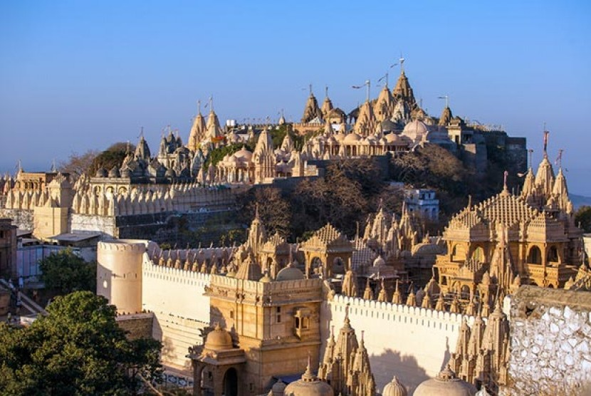

1. Teori Mekah

Teori ini mengatakan bahwa proses masuknya Islam ke Indonesia adalah langsung dari Mekah atau Arab. Proses ini berlangsung pada abad pertama Hijriah atau abad ke-7 M. Tokoh yang memperkenalkan teori ini adalah Haji Abdul Karim Amrullah atau HAMKA, salah seorang ulama sekaligus sastrawan Indonesia. Hamka mengemukakan pendapatnya ini pada tahun 1958, saat orasi yang disampaikan pada dies natalis Perguruan Tinggi Islam Negeri (PTIN) di Yogyakarta. Ia menolak seluruh anggapan para sarjana Barat yang mengemukakan bahwa Islam datang ke Indonesia tidak langsung dari Arab. Bahan argumentasi yang dijadikan bahan rujukan HAMKA adalah sumber lokal Indonesia dan sumber Arab. Dalam hal ini, teori HAMKA merupakan sanggahan terhadap Teori Gujarat yang banyak kelemahan. Ia malah curiga terhadap prasangkaprasangka penulis orientalis Barat yang cenderung memojokkan Islam di Indonesia. Pandangan HAMKA ini hampir sama dengan Teori Sufi yang diungkapkan oleh A.H. Johns yang mengatakan bahwa para musafirlah (kaum pengembara) yang telah melakukan Islamisasi awal di Indonesia.
2.Teori Gujarat
Teori ini mengatakan bahwa proses kedatangan Islam ke Indonesia berasal dari Gujarat pada abad ke-7 H atau abad ke-13 M. Gujarat ini terletak di India bagain barat, berdekaran dengan Laut Arab. Tokoh yang mensosialisasikan teori ini kebanyakan adalah sarjana dari Belanda. Sarjana pertama yang mengemukakan teori ini adalah J. Pijnapel dari Universitas Leiden pada abad ke 19. Menurutnya, orang-orang Arab bermazhab Syafei telah bermukim di Gujarat dan Malabar sejak awal Hijriyyah (abad ke 7 Masehi), namun yang menyebarkan Islam ke Indonesia menurut Pijnapel bukanlah dari orang Arab langsung, melainkan pedagang Gujarat yang telah memeluk Islam dan berdagang ke dunia timur, termasuk Indonesia. teori Pijnapel ini disebarkan oleh seorang orientalis terkemuka Belanda, Snouck Hurgronje. Menurutnya, Islam telah lebih dulu berkembang di kota-kota pelabuhan Anak Benua India. Orang-orang Gujarat telah lebih awal membuka hubungan dagang dengan Indonesia dibanding dengan pedagang Arab. Dalam pandangan Hurgronje, kedatangan orang Arab terjadi pada masa berikutnya. Orang-orang Arab yang datang ini kebanyakan adalah keturunan Nabi Muhammad yang menggunakan gelar “sayid” atau “syarif ” di depan namanya. Teori Gujarat kemudian juga dikembangkan oleh J.P. Moquetta (1912) yang memberikan argumentasi dengan batu nisan Sultan Malik Al-Saleh yang wafat pada tanggal 17 Dzulhijjah 831 H/1297 M di Pasai, Aceh. Menurutnya, batu nisan di Pasai dan makam Maulanan Malik Ibrahim yang wafat tahun 1419 di Gresik, Jawa Timur, memiliki bentuk yang sama dengan nisan yang terdapat di Kambay, Gujarat. Moquetta akhirnya berkesimpulan bahwa batu nisan tersebut diimpor dari Gujarat, atau setidaknya dibuat oleh orang Gujarat atau orang Indonesia yang telah belajar kaligrafi khas Gujarat. Alasan lainnya adalah kesamaan mahzab Syafi'i yang di anut masyarakat muslim di Gujarat dan Indonesia.
3.Teori Persia
Teori ini mengatakan bahwa proses kedatangan Islam ke Indonesia berasal dari daerah Persia atau Parsi (kini Iran). Pencetus dari teori ini adalah Hoesein Djajadiningrat, sejarawan asal Banten. Dalam memberikan argumentasinya, Hoesein lebih menitik beratkan analisisnya pada kesamaan budaya dan tradisi yang berkembang antara masyarakat Parsi dan Indonesia. Tradisi tersebut antara lain: tradisi merayakan 10 Muharram atau Asyuro sebagai hari suci kaum Syiah atas kematian Husein bin Ali, cucu Nabi Muhammad, seperti yang berkembang dalam tradisi tabut di Pariaman di Sumatera Barat. Istilah “tabut” (keranda) diambil dari bahasa Arab yang ditranslasi melalui bahasa Parsi. Tradisi lain adalah ajaran mistik yang banyak kesamaan, misalnya antara ajaran Syekh Siti Jenar dari Jawa Tengah dengan ajaran sufi AlHallaj dari Persia. Bukan kebetulan, keduanya mati dihukum oleh penguasa setempat karena ajaranajarannya dinilai bertentangan dengan ketauhidan Islam (murtad) dan membahayakan stabilitas politik dan sosial. Alasan lain yang dikemukakan Hoesein yang sejalan dengan teori Moquetta, yaitu ada kesamaan seni kaligrafi pahat pada batu-batu nisan yang dipakai di kuburan Islam awal di Indonesia. Kesamaan lain adalah bahwa umat Islam Indonesia menganut mahzab Syafei, sama seperti kebanyak muslim di Iran.
4.Teori Cina
Teori ini mengatakan bahwa proses kedatangan Islam ke Indonesia (khususnya di Jawa) berasal dari para perantau Cina. Orang Cina telah berhubungan dengan masyarakat Indonesia jauh sebelum Islam dikenal di Indonesia. Pada masa Hindu-Buddha, etnis Cina atau Tiongkok telah berbaur dengan penduduk Indonesia terutama melalui kontak dagang. Bahkan, ajaran Islam telah sampai di Cina pada abad ke-7 M, masa di mana agama ini baru berkembang. Sumanto Al Qurtuby dalam bukunya Arus Cina-Islam-Jawa menyatakan, menurut kronik masa Dinasti Tang (618-960) di daerah Kanton, Zhang-zhao, Quanzhou, dam pesisir Cina bagian selatan, telah terdapat sejumlah pemukiman Islam. Menurut sejumlah sumber lokal tersebut ditulis bahwa raja Islam pertama di Jawa, yakni Raden Patah dari Bintoro Demak, merupakan keturunan Cina. Ibunya disebutkan berasal dari Campa, Cina bagian selatan (sekarang termasuk Vietnam). Bukti-bukti lainnya adalah masjid-masjid tua yang bernilai arsitektur Tiongkok yang didirikan oleh komunitas Cina di berbagai tempat, terutama di Pulau Jawa. Pelabuhan penting sepanjang pada abad ke-15 seperti Gresik, misalnya, menurut catatan-catatan Cina, diduduki pertama-tama oleh para pelaut dan pedagang Cina.